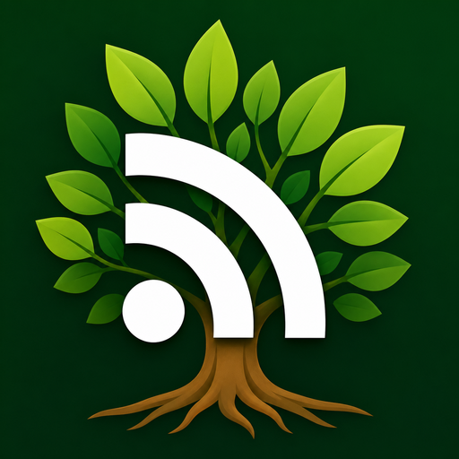
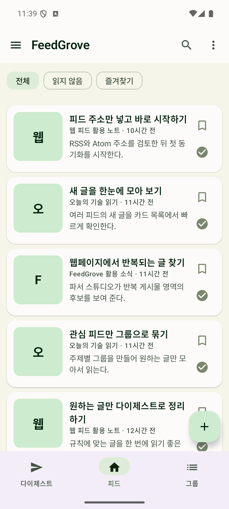
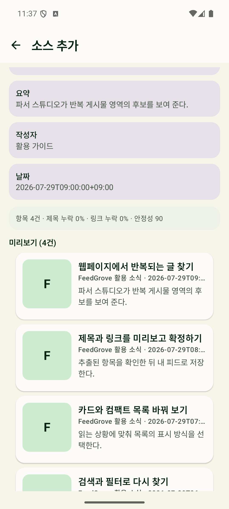
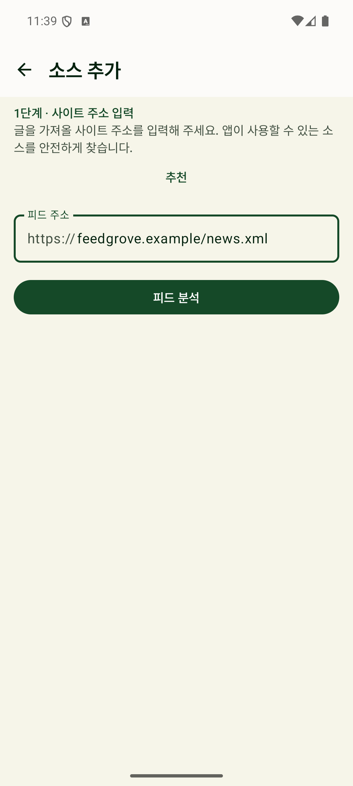
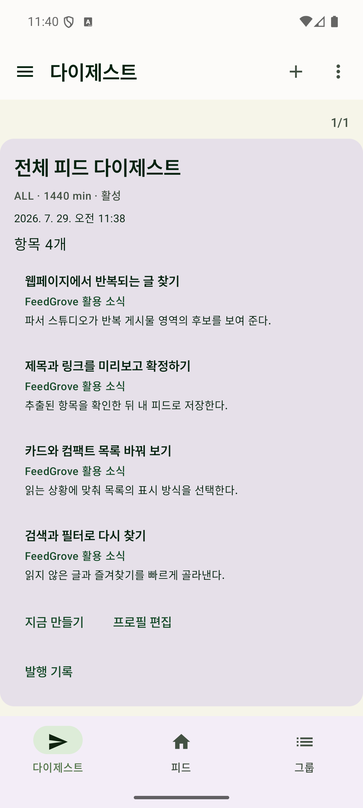
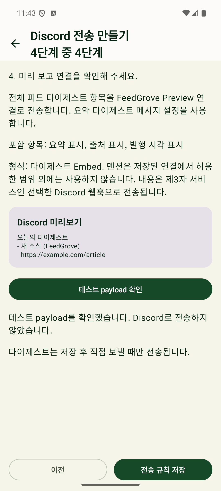

읽기 편한 목록으로
카드, 컴팩트, 그룹 보기를 골라 쓰세요. 검색과 읽음 표시, 즐겨찾기로 쌓인 글을 정리할 수 있습니다.

Android · 피드 리더FeedGrove
뉴스와 블로그, 관심 있는 웹페이지의 새 글을 모아 읽으세요. RSS와 Atom부터 일반 공개 페이지까지, 계정 없이 내 기기에서 관리합니다.
Android 8.0 이상 · 한국어, English, 日本語

피드 추가와 파서 스튜디오
RSS와 Atom 주소를 추가하거나, 웹사이트에서 피드 후보를 찾을 수 있습니다. 공식 피드가 없는 공개 페이지는 파서 스튜디오에서 반복되는 글 영역을 골라 구성하세요.
가져올 제목과 링크를 확인한 뒤 직접 확정합니다. 모든 웹사이트에서 피드를 만들 수 있는 것은 아닙니다.

카드, 컴팩트, 그룹 보기를 골라 쓰세요. 검색과 읽음 표시, 즐겨찾기로 쌓인 글을 정리할 수 있습니다.
규칙에 맞는 글을 다이제스트로 묶습니다. 관심 있는 소식을 한 번에 확인하고 싶을 때 사용하세요.
본인 웹훅을 등록하고 활성화한 경우에만 전송합니다. plain, single, multi, digest embed 형식을 지원합니다.
실제 앱 화면
한국어 인터페이스의 실제 화면입니다. 이미지를 누르면 원본 크기로 볼 수 있습니다.



처음 시작하기
Google Play에서 설치한 뒤 첫 피드를 추가하세요. 그룹이나 외부 전송은 나중에 필요할 때 설정해도 됩니다.
Google Play에서 보기Android 8.0 이상 기기에 FeedGrove를 설치합니다. 별도 서비스 계정은 필요하지 않습니다.
RSS, Atom 또는 공개 웹페이지 주소를 넣으세요. 피드 후보나 파서 미리보기 결과를 확인하고 저장합니다.
새 글을 읽고 즐겨찾기에 담으세요. 필요하면 그룹, 다이제스트와 선택형 Discord 전송을 설정합니다.
사용 전에 알아두세요
피드와 읽기 상태는 기기 내 Room 데이터베이스를 중심으로 관리합니다. 보관 범위와 외부 연결 조건을 확인해 주세요.
개인정보처리방침저장된 제목, 링크, 요약과 항목 정보를 다시 볼 수 있습니다. 원문 전체를 저장하는 기능은 아니며, 원문은 브라우저로 엽니다.
사용자가 자신의 웹훅을 등록하고 활성화한 경우에만 선택한 콘텐츠를 전송합니다.
로그인, 유료벽, CAPTCHA나 접근 제한을 우회하지 않습니다. 사이트 구조에 따라 피드 생성이 지원되지 않을 수 있습니다.
희망 갱신 주기를 설정할 수 있지만, Android 절전 정책과 네트워크 상태에 따라 실제 실행 시각이 달라질 수 있습니다.
FeedGrove